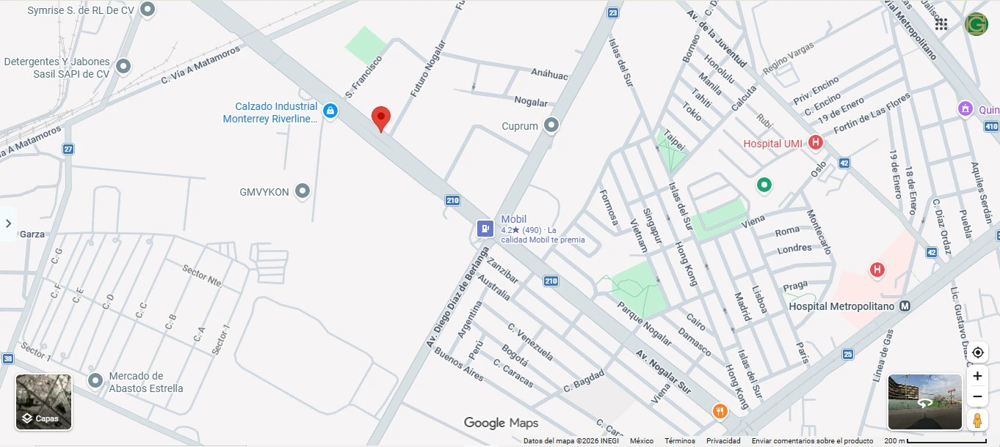

UBICACIÓN
Previsión Familiar · 12 de noviembre de 2026
📍 Capillas Marianas Nogalar
Nueva casa funeraria Grupo Gayosso · abre en diciembre · hoy en preventa
Así lucirá la nueva Capillas Marianas Nogalar

📍 Capillas Marianas Nogalar
🕘
VISITAS BAJO CITA PROGRAMADA
Lunes a viernes: 9:00 a.m. a 5:00 p.m. · Sábados: 9:00 a.m. a 2:00 p.m.
Agende su recorrido por WhatsApp y le espero personalmente.
Lunes a viernes: 9:00 a.m. a 5:00 p.m. · Sábados: 9:00 a.m. a 2:00 p.m.
Agende su recorrido por WhatsApp y le espero personalmente.
Av. Nogalar Sur 420 A
San Nicolás de los Garza, N.L., C.P. 66484
🧭 Referencias:
▪ A un lado: AutoZone
▪ Enfrente: Banco BanRegio
▪ Entre Privada San Francisco y Futuro Nogalar, a 300 m de la gasolinera Mobil (esq. Diego Díaz de Berlanga)
🤝 Al llegar, pregunte por Abraham Cutipa.
San Nicolás de los Garza, N.L., C.P. 66484
🧭 Referencias:
▪ A un lado: AutoZone
▪ Enfrente: Banco BanRegio
▪ Entre Privada San Francisco y Futuro Nogalar, a 300 m de la gasolinera Mobil (esq. Diego Díaz de Berlanga)
🤝 Al llegar, pregunte por Abraham Cutipa.
📲 Escanee y abra la ruta en Google Maps
Abraham Cutipa
Asesor Certificado de Previsión Familiar · Grupo Gayosso · Monterrey
WhatsApp 81 1627 6206